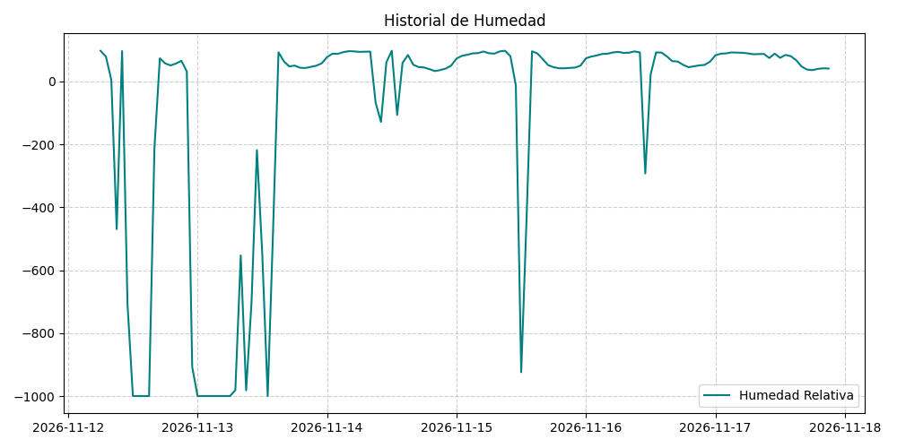

📡 Reporte de Anomalías y Tendencias IoT
Última actualización: 2026-11-20 09:18:03 Estaciones: Zona Tláhuac - Chalco
Como analista de hardware IoT, he procesado el lote de datos proporcionado. A continuación, presento el diagnóstico técnico:
1. Día más caluroso y más frío
- Día más caluroso: 17 de noviembre de 2026. Se registró la temperatura máxima absoluta del periodo analizado en
temp_sensor1con 26.45 °C a las 18:00 UTC. - Día más frío: 15 de noviembre de 2026. Se registró la temperatura mínima del periodo en
temp_sensor3descendiendo hasta los 9.76 °C a las 12:00 UTC.
2. Horas de mayor radiación
Los picos máximos de radiación ocurren consistentemente en la franja vespertina, entre las 17:00 UTC y las 19:00 UTC. * Pico máximo registrado: A las 18:00 UTC (ej. el 15 y 17 de noviembre), alcanzando valores de Radiación Infrarroja ($\approx 6330$), Radiación Visible ($\approx 731$) y Radiación UV ($\approx 2.54$).
3. Falla en sensores
Se detectaron anomalías críticas e inconsistencias físicas ("glitches") en los datos de humedad, lo que apunta a fallas intermitentes o degradación del hardware en el sensor de humedad:
* Lecturas negativas anómalas: El sensor reportó valores físicamente imposibles para la humedad relativa (ej. -12.50% el 15 de noviembre a las 11:00 UTC).
* Picos de ruido extremo: Se observan caídas abruptas y masivas hacia escalas negativas profundas, como -924.05% el 15 de noviembre a las 12:00 UTC, y -432.01% a las 13:00 UTC, repitiéndose el 16 de noviembre (-292.32%).
Recomendación: Se sugiere revisión física del cableado, calibración o reemplazo del módulo higrómetro por posible saturación del ADC o fallo en el bus de comunicación.
Análisis Gráfico de Tendencias

